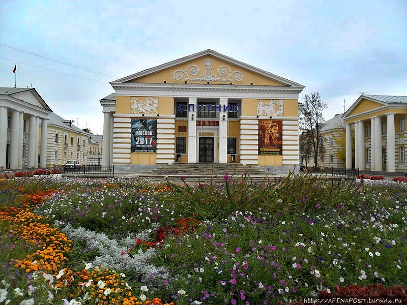
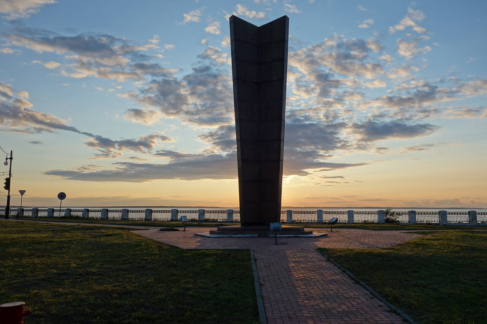
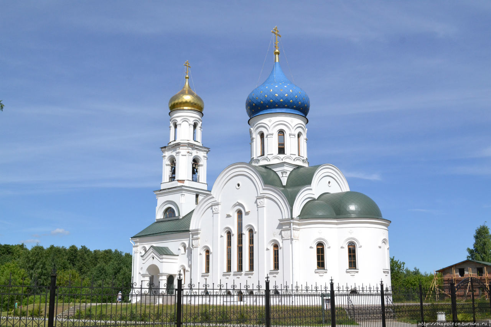
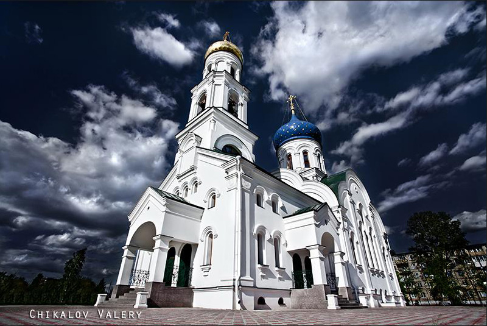
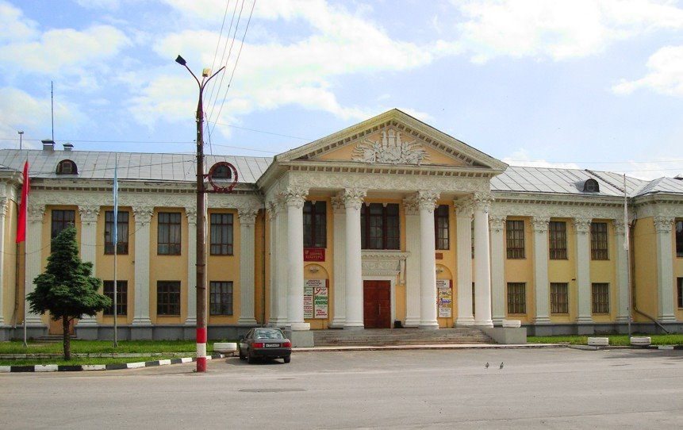
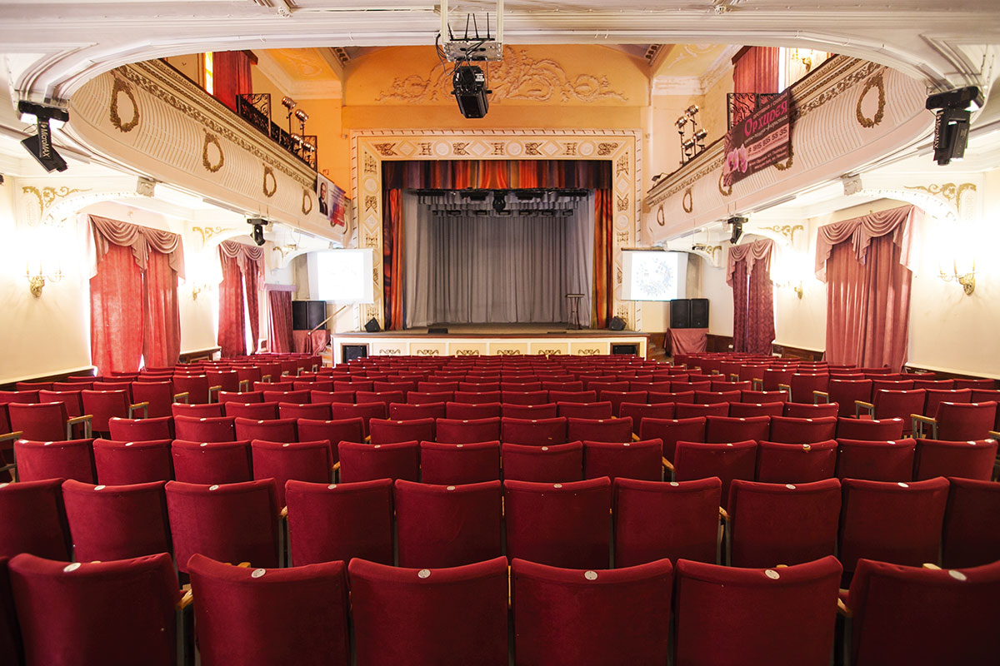

► Достопримечательности
Застройка центра Заволжья, осуществленная в 1947—1950 гг. по проекту Н. П. Шеломова, отнесена к памятникам архитектуры. Зодчим удалось при планировке нового города создать интересный ансамбль, в котором нашли отражение традиции русского классицизма. Симметрична осевая композиция двух перетекающих друг в друга площадей, образованных трехэтажными домами с пилястрами дорического ордера и башнями.


В середине плотины, у развилки дорог на Иваново, Городец и Нижний Новгород установлен 10-метровый обелиск, на котором высечены названия организаций, сооружавших электростанцию и имена отличившихся строителей.
В Дзержинском микрорайоне с 2007 года работает церковь во имя Святой Троицы.


В начале городской аллеи, рядом с парком им. Гагарина находится городской дворец культуры.


 telegram
telegram instagram
instagram discord
discord